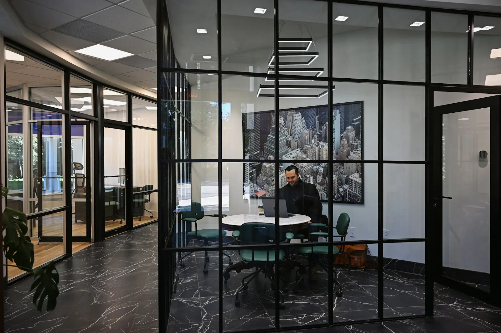

Responsabilidade desde cedo
Cada associado é responsável por casos reais, com um sócio revisando e orientando. Ninguém passa anos só pesquisando jurisprudência.
Av. Brigadeiro Faria Lima, 3.900, 14º andar · São Paulo
(11) 3045-0000 · seg. a sex., 8h às 19h
Aqui o associado participa das reuniões com o cliente desde o primeiro ano e tem um sócio orientador. Formamos hoje quem vai cuidar das empresas daqui a dez anos.
Cada associado é responsável por casos reais, com um sócio revisando e orientando. Ninguém passa anos só pesquisando jurisprudência.
Escrevemos para quem decide, em linguagem de negócio. Treinamos isso: todo parecer começa com um resumo de uma página.
Todo caso tem responsável e substituto, e a equipe de prazos confere a agenda de todos toda segunda-feira.
Trabalho híbrido, recesso coletivo no fim do ano e horário de saída respeitado, salvo prazo urgente combinado com antecedência.
Para atuar em defesas administrativas e no projeto da reforma tributária ao lado de Ricardo Bastos.
Para acompanhar audiências, preparar defesas e apoiar a adequação dos clientes à NR-1.
Para conduzir auditorias jurídicas e contratos de investimento e de compra e venda com Camila Duarte.
O programa de estágio passa por três áreas em um ano, com um sócio orientador e avaliação a cada quatro meses.
